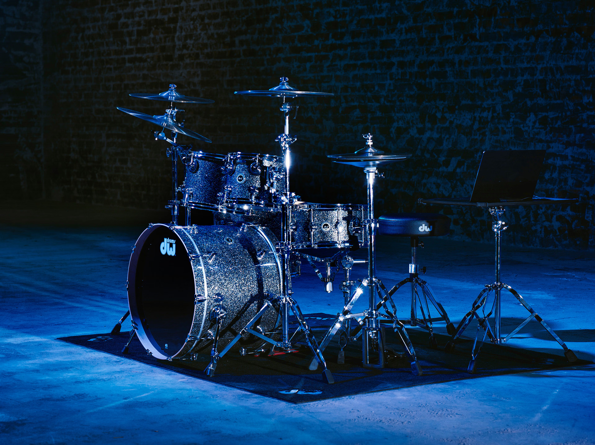

CAMERA-BASED DRUM STUDIO
Your space.
Your drum kit.
Place a snare, mid tom, crash, and hi-hat over your live camera view. Adjust the layout to suit your reach.
Set up your kit ↗Camera preview, hand tracking, and drum sounds.
Arrange your kit, enable sound, and start tracking.

GETTING STARTED
Set up in your own space.
You need a device with a camera and a browser. No account or API key is needed for this local version.
Enable your camera
Allow camera access when prompted. Point it toward the space where you want to place the drums.
Arrange the kit
Drag each drum into position. Use Camera overlay to change the size, angle, or preset.
Lock the layout
Select Play to keep the drums in place. Enable sound and start hand tracking when you are ready.
Before you start
Camera privacy
The preview stays in your browser. This version does not send camera frames to a server.
Placement
The drums stay fixed on screen. If you move the camera, adjust the layout again.